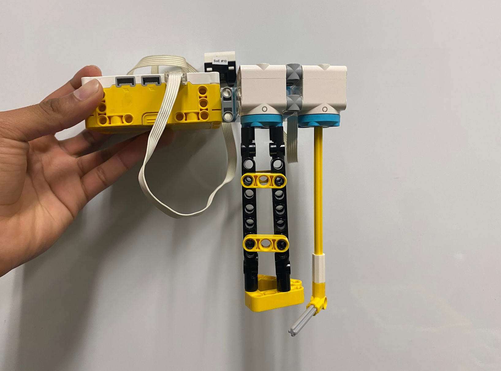
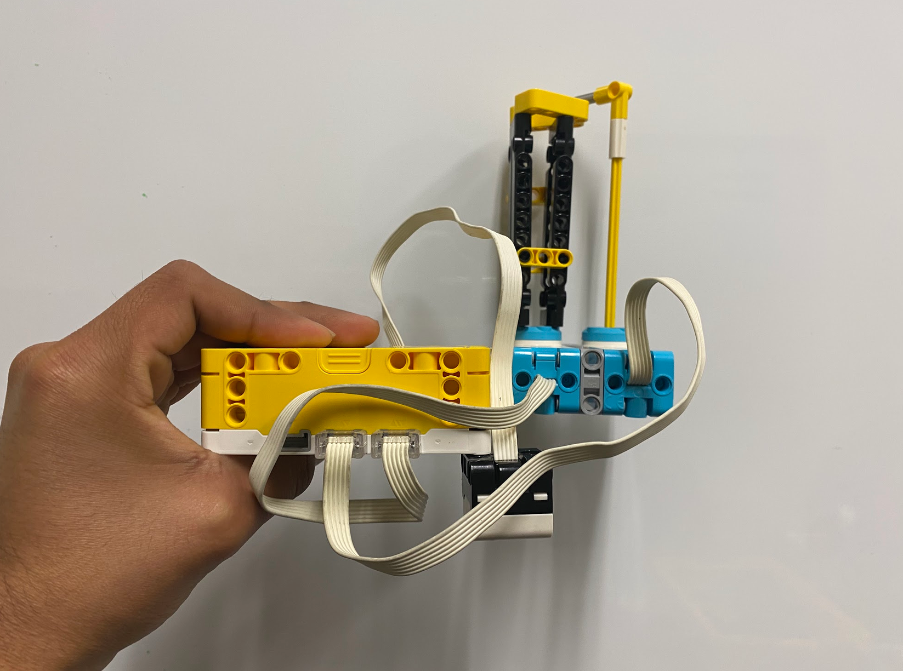
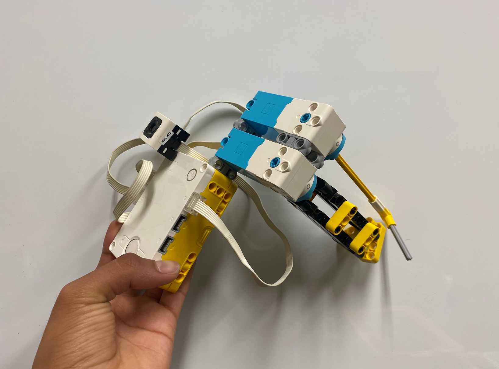

The mission is to design a one-handed LEGO Education SPIKE Prime tool that helps an astronaut move nuts from one bolt to another during a spacewalk. The tool must unscrew a nut, keep hold of it while it is off the bolt, and screw it onto a second bolt.
The design must account for the limits of working outside a spacecraft: astronauts wear bulky, stiff gloves, have limited dexterity, and need to keep one hand on the spacecraft. The tool must stay in the user's hand or be tethered, work in either hand, and make the task reasonably quick.
Testing uses a board with two bolts and two nuts. Wearing ski gloves as a stand-in for space-suit gloves, the user works with one hand. A successful run moves both nuts from one bolt to the other without dropping either nut; dropping a nut ends the run.
The tool is evaluated for use with the right hand, the left hand, and with the board upright, upside down, and on its side. In the speed challenge, students race head-to-head; the fastest successful run advances, while a dropped nut loses the round.
I was eliminated immediately because my design had a major flaw: it required extremely dexterous finger movements, which were very straining.
Photos of the astronaut tool from different angles.


The program uses the color sensor to run motor A in different directions for green and magenta, while the hub buttons turn motor C by 30 degrees.
# Setup: color sensor on port B, motor A for color reactions, and motor C for button turns.
from hub import port, button
import runloop
import motor
import color
import color_sensor
# Set the speeds for the two directions.
COUNTERCLOCKWISE_SPEED = -300
CLOCKWISE_SPEED = 300
async def main():
# Keep checking the sensor and buttons while the program runs.
while True:
# Run motor A counterclockwise when the sensor sees green.
if color_sensor.color(port.B) == color.GREEN:
motor.run(port.A, COUNTERCLOCKWISE_SPEED)
# Run motor A clockwise when the sensor sees pink (magenta).
elif color_sensor.color(port.B) == color.MAGENTA:
motor.run(port.A, CLOCKWISE_SPEED)
# Stop motor A when neither color is detected.
else:
motor.stop(port.A)
# Turn motor C counterclockwise 30 degrees when the left button is pressed.
if button.pressed(button.LEFT) > 0:
await motor.run_for_degrees(port.C, 30, COUNTERCLOCKWISE_SPEED)
# Wait for release so holding the button does not repeat the turn.
while button.pressed(button.LEFT) > 0:
await runloop.sleep_ms(20)
# Turn motor C clockwise 30 degrees when the right button is pressed.
elif button.pressed(button.RIGHT) > 0:
await motor.run_for_degrees(port.C, 30, CLOCKWISE_SPEED)
# Wait for release so holding the button does not repeat the turn.
while button.pressed(button.RIGHT) > 0:
await runloop.sleep_ms(20)
# Pause briefly before checking again.
await runloop.sleep_ms(20)
# Start the program.
runloop.run(main())Short clips show the five test conditions: right hand, left hand, board upright, board upside down, and board horizontal.
I used LEGO-brick colored fingertips and a color sensor to turn the motor in either direction, since I had few buttons available and small buttons were difficult to press with bulky gloves. A rod rotates beneath the nut to hold it in the socket, preventing it from falling out while I move it.
I would also explore making the socket magnetic so it could hold the nut without needing a rod.
For a real astronaut, I would add a strap so I would not lose the tool.